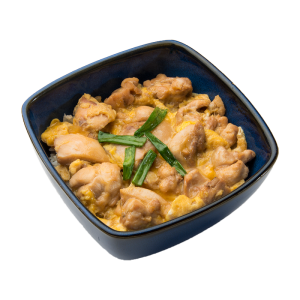

Oyakodon

Description
Oyakodon is a Japanese dish consisting of chicken, eggs, and onions simmered in a dashi-based sauce and served over steamed rice.
Ingredients:
- 2 chicken thighs, boneless and skinless, diced
- 1/2 onion, sliced
- 2 cups cooked short-grain rice
- 2 beaten eggs
- 2 tablespoons dashi or chicken broth
- 2 tablespoons soy sauce
- 1 tablespoon sake
- 1 teaspoon sugar
- 2 green onions, chopped
Steps:
- In a large frying pan, heat a small amount of oil over medium heat and sauté the diced chicken until browned.
- Add the sliced onion and continue to sauté until soft.
- Stir in the dashi or chicken broth, soy sauce, sake, and sugar.
- Pour the beaten eggs over the chicken mixture and scramble until set.
- Spoon the cooked rice over the eggs, spreading it evenly.
- Cover the frying pan and cook until the eggs are fully set and the rice is heated through, about 5 minutes.
- Garnish with the chopped green onion and serve hot.